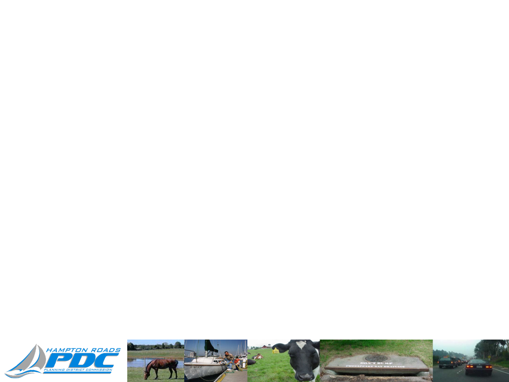
Chesapeake Bay TMDL:
Phase II WIP Update
Presented to
Hampton Roads Planning District Commission
Whitney S. Katchmark
Principal Water Resources Engineer
December 15, 2011
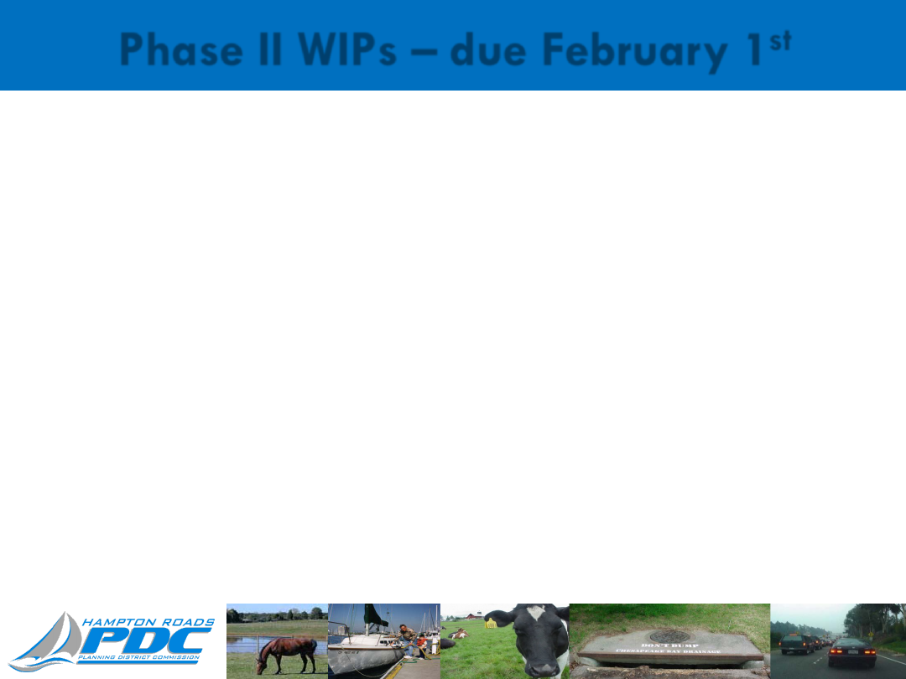
Phase II WIPs – due February 1
st
State letter requested that local governments:
1.
Develop a current BMP inventory.
2.
Evaluate land use/ land cover information.
3.
Review BMP scenarios identified in the Phase I
WIP, and develop preferred local scenarios that
provide a similar level of treatment.
4.
Develop strategies to implement the BMP
scenarios.
5.
Identify any resource needs to implement the
strategies.
2
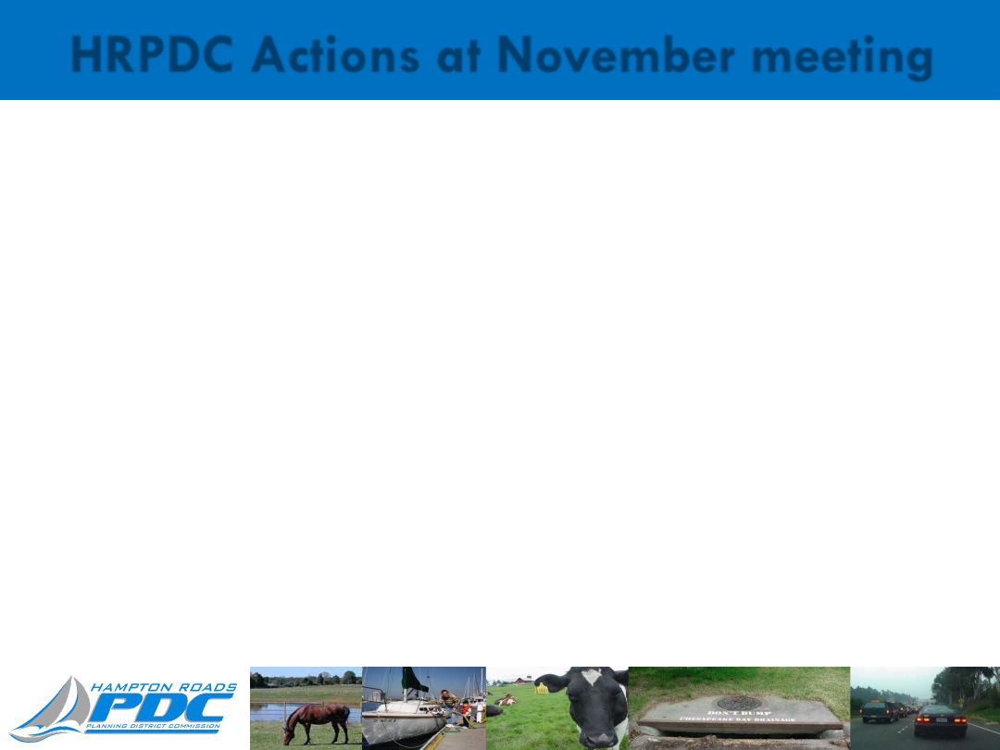
HRPDC Actions at November meeting
Localities submit information on program level goals and
HRPDC staff translates into a Regional VAST scenario
that will be submitted to Virginia.
Localities will each submit an individual plan to DCR
that focuses on narrative strategies.
HRPDC staff will translate strategies into a Regional
input file that will be appended to locality reports.
3
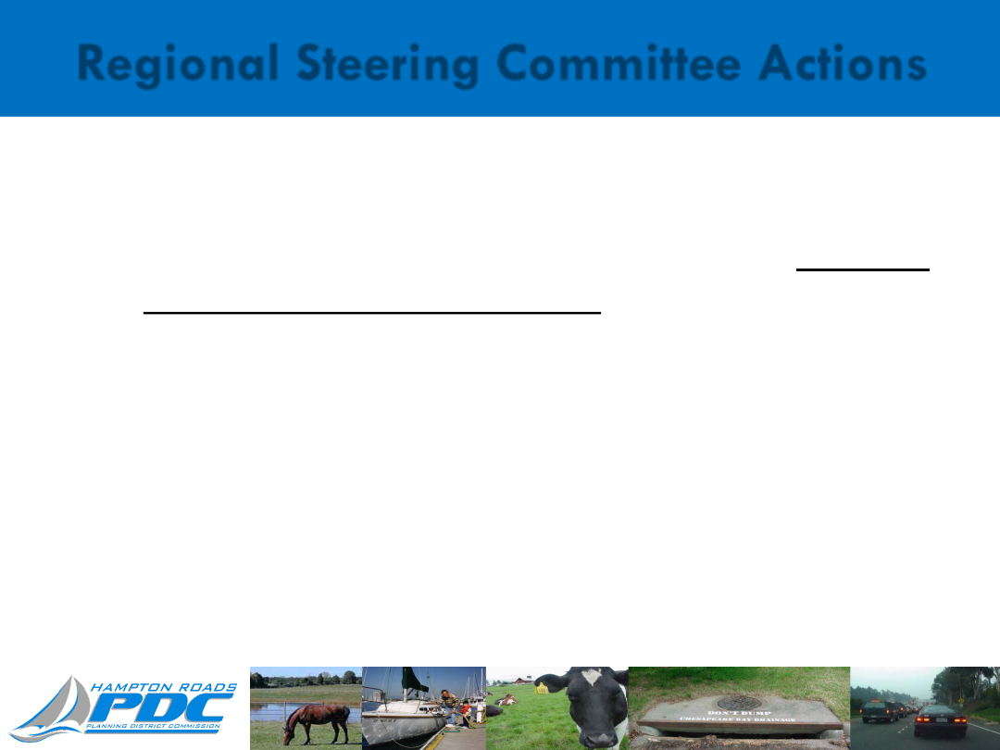
Regional Steering Committee Actions
At December 1
st
meeting, Committee agreed:
Localities would each submit BMP scenarios based on
realistic financial commitments.
HRPDC staff would translate local scenarios into a
Regional input file and identify the gap between the
target and realistic implementation plans.
HRPDC sent letter to CAOs on December 8, 2011
reflecting the Steering Committee’s recommendations.
4
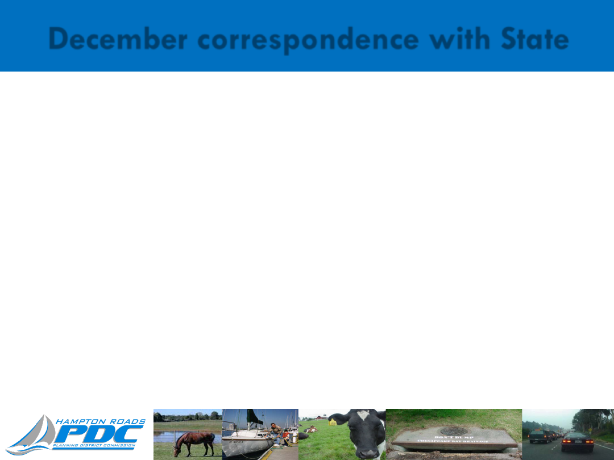
December correspondence with State
If localities submit BMP scenarios with less nutrient reductions
than Phase I WIP, State will work with localities to fill the gap.
If there isn’t enough time or the gap is too big, the State will use
the Phase I WIP scenarios and disregard the local input.
DCR expects the region to identify additional conditions that will
limit the feasibility of implementing the BMP scenarios.
Funding limitations
Insufficient time
Lack of State programs such as Nutrient Credit Trading
Inadequate BMP research, i.e. Fertilizer ban has not been
quantified.
5
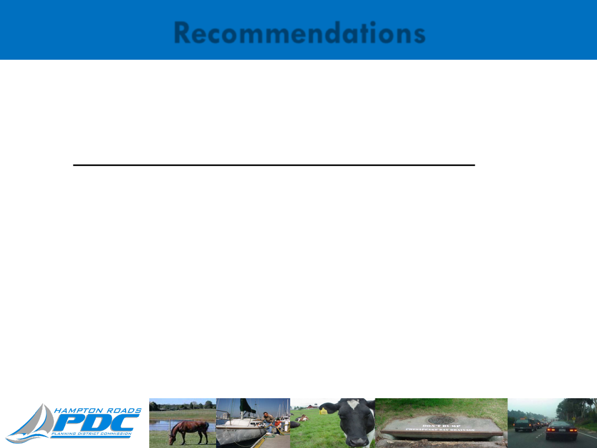
Recommendations
Locality role:
1.
Develop preferred local scenarios that provide a
similar level of treatment to Phase I WIP.
2.
Identify portion that can be realistically funded
and define qualifications and conditions to
reaching the Phase I WIP level of treatment.
6
Recommendations
HRPDC role: Create BMP scenarios for James and York
basins that meet Phase I WIP level of treatment.
PDC staff will select BMPs to fill the gap between local
scenarios and the level of treatment for each basin.
PDC staff will include conditions that impact the
feasibility of implementing the basin scenarios.
If localities do not provide input, PDC staff will select
BMPs to meet the level of treatment for each basin.
7
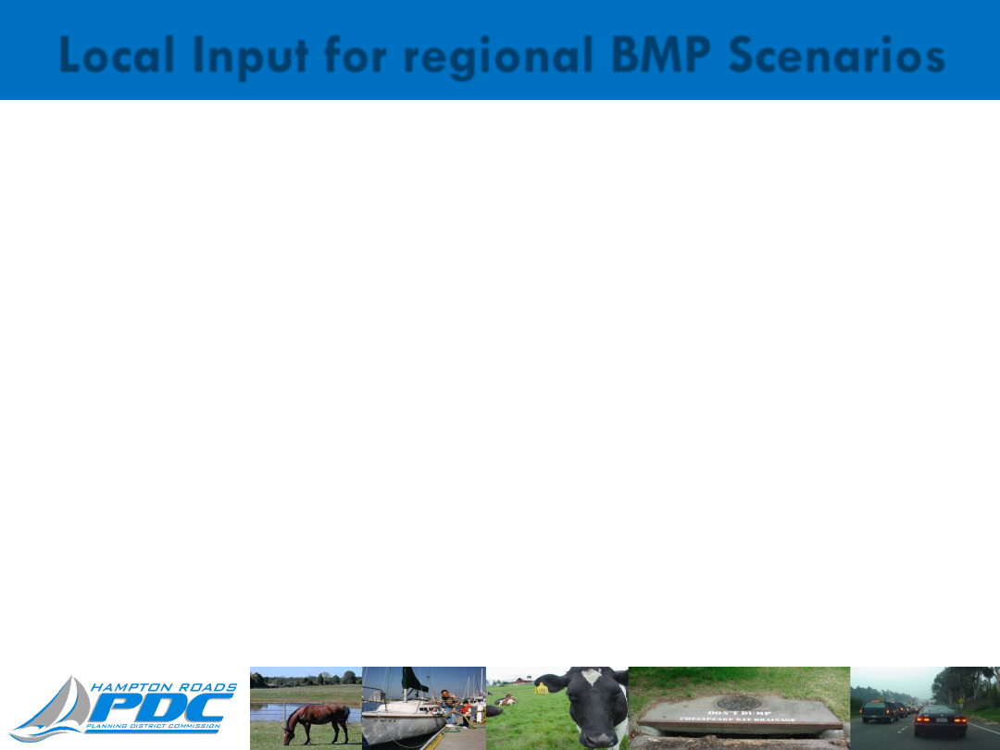
Local Input for regional BMP Scenarios
Send HRPDC the following data:
1. Corrected baseline BMP and land use data.
2. Level of implementation for each BMP in VAST webtool.
Preferred data: acres or percentage of land treated
by each type of BMP.
Adequate data: prioritize BMPs that the locality
would implement & estimate level of
implementation: high, medium, or low.
3. Level of implementation for Alternate BMPs which are
not currently included in VAST.
8
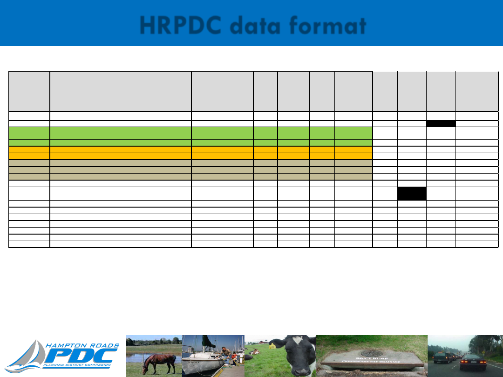
HRPDC data format
9
Data Source
BMP
Unit of Measure
Nitrogen
Removal
Phosphorus
Removal
Sediment
Removal
Annual Cost
over 20 years
per impervious
acre treated
Proposed
acres
treated
by 2025
Proposed
Pervious
Acres
Treated
Proposed
Impervious
Acres
Treated
Proposed 2025
Implementation
Level (high,
medium, low,
none)
VAST
Wetland Restoration
acres treated
3,963
$
VAST
Urban Tree Planting; Urban Tree Canopy
acres
2,860
$
VAST
Green Roofs, Rain Barrels, rooftop disconnects (Impervious acres
converted to pervious)
acres
13%
72%
84%
5,698
$
VAST
Impervious Surface Reduction (impervious acres converted to forest)
acres
71%
94%
93%
NA
VAST
Urban Infiltration Practices - with sandveg no underdrain
acres treated
85%
85%
95%
3,879
$
VAST
Permeable Pavement - no sandveg with underdrain
acres treated
50%
45%
70%
14,167
$
VAST
Vegetated Open Channel - Urban
acres treated
45%
45%
70%
1,810
$
VAST
Urban Filtering Practices
acres treated
40%
60%
80%
4,156
$
VAST
Bioretention/raingardens (new)
acres treated
75%
70%
80%
3,875
$
VAST
Wet Ponds and Wetlands
acres treated
20%
45%
60%
1,968
$
VAST
Street Sweeping Mechanical Monthly (annual load reduction of
TN=0.43lbs, TP=0.08lbs, TSS=0.05lbs)
lbs of debris and acres swept
3%
3%
9%
754
$
VAST
Septic Pumping
Unit
0.6 lb/unit
NA
NA
VAST
Septic Denitrification
Unit
6 lb/unit
NA
NA
VAST
Septic Connection to WWTP
Unit
9 lb/unit
NA
NA
Alternative BMP
Shoreline Erosion Control/Living Shorelines
Linear feet
.16 lb/unit
.11 lb/unit
451 lb/unit
Alternative BMP
Emergent marsh restoration
acres
42%
55%
Alternative BMP
Catch Basin Cleaning
tons of collected dry material
1.5lb/ton
0.6lbs/ton
600lbs/ton
Alternative BMP
Storm Drain Vacuuming
tons of collected dry material
1.5lb/ton
0.6lbs/ton
600lbs/ton
Spreadsheet was distributed on December 6
th
to the Regional Steering Committee
and Stormwater Committee. This is a portion of the BMPs on the spreadsheet;
there are additional BMPs and localities can add other alternatives.

Basin BMP Scenarios - Timeline
December 28
th
: Localities submit BMP scenarios
to HRPDC staff.
January 5
th
: HRPDC staff review draft regional
VAST input files and narrative with Regional
Steering Committee.
January 19
th
: Regional Appendix will be presented
at HRPDC commission meeting.
February 1
st
: Localities submit Phase II WIP input
to DCR including regional appendix.
10
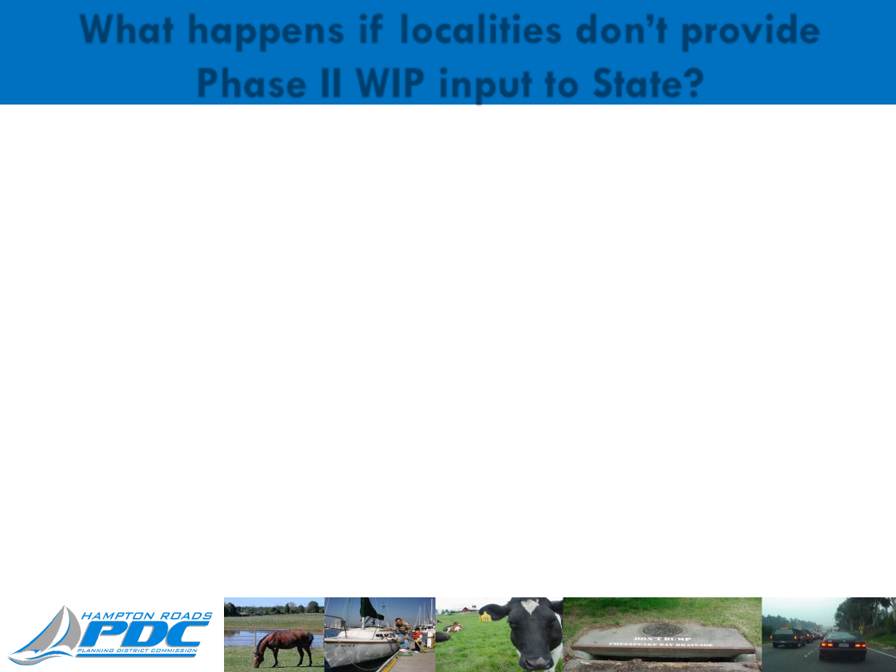
What happens if localities don’t provide
Phase II WIP input to State?
1. Virginia will submit the Phase I WIP scenarios to EPA
which do not represent preferred local strategies.
2. Local governments may be perceived as not
supporting the Chesapeake Bay clean up.
3. EPA could implement Backstops in Virginia.
11
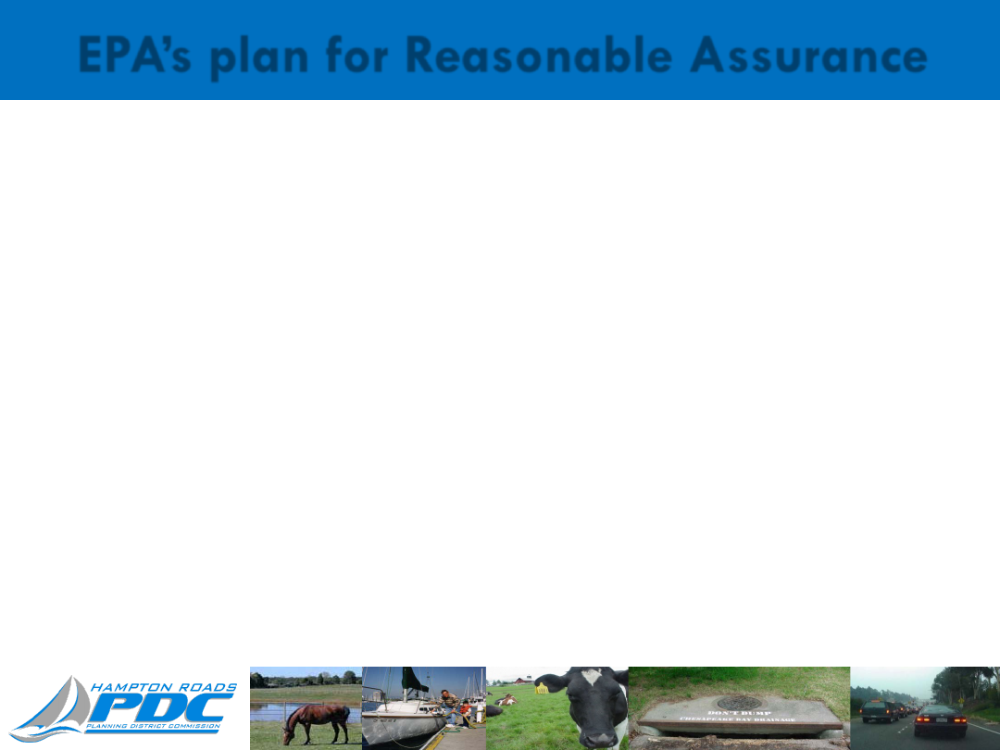
EPA’s plan for Reasonable Assurance
EPA could implement Backstops if Virginia’s Phase II
WIP does not provide reasonable assurance that TMDL
will be implemented.
Backstops require 1,460,000 lbs/yr of N removed from
urban stormwater in James & York basins.
Phase I WIP requires 489,000 lbs/yr of N removed
from urban stormwater in James & York basins.
Urban stormwater backstops would cost Hampton
Roads approximately $6B more than the Phase I WIP.
12
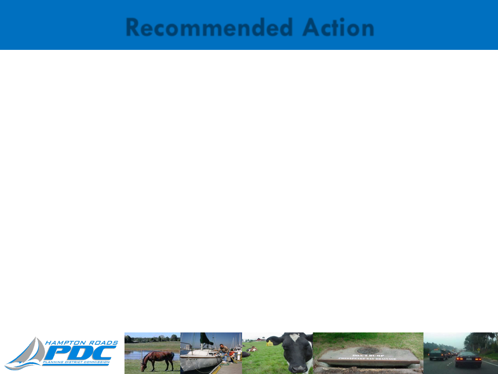
Recommended Action
1. By December 28
th
, localities will send HRPDC:
Corrected baseline BMP and land use data.
Level of implementation for each BMP with conditions and
qualifications.
2. Authorize HRPDC staff to select BMPs to fill the gap between
local scenarios and the Phase I WIP level of treatment. BMP
scenarios for the James and York basins will be included in the
Regional report.
3. Localities will each submit an individual plan to DCR that focuses
on narrative strategies and includes the Regional report as an
appendix.
13
Document Outline